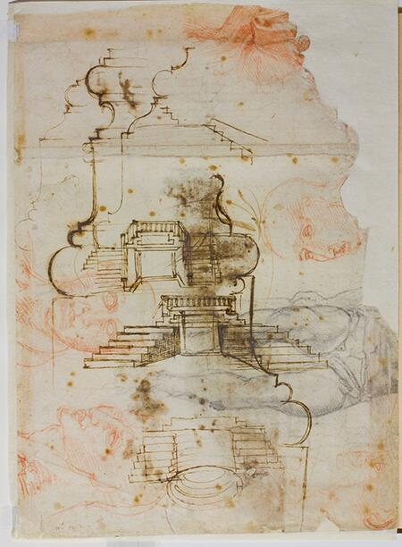
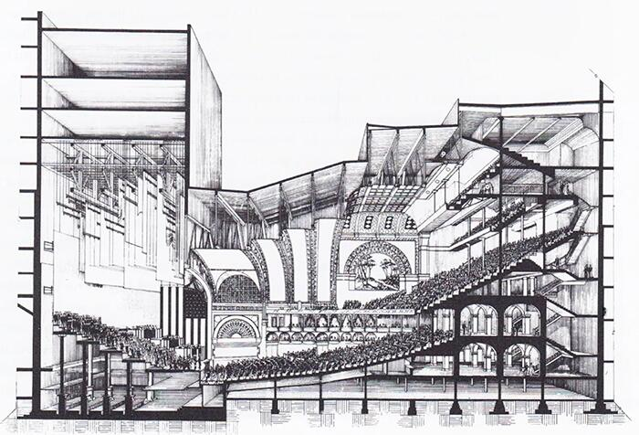
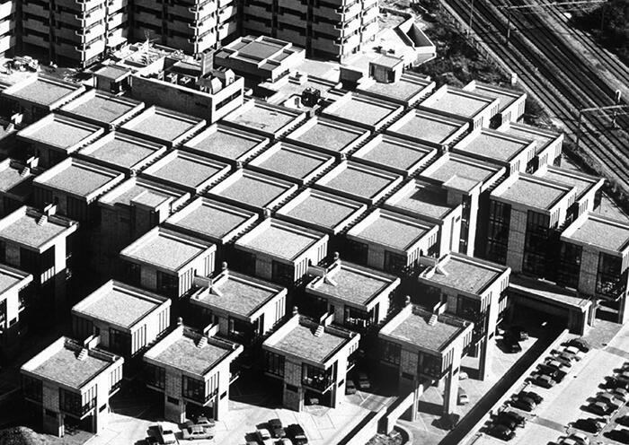
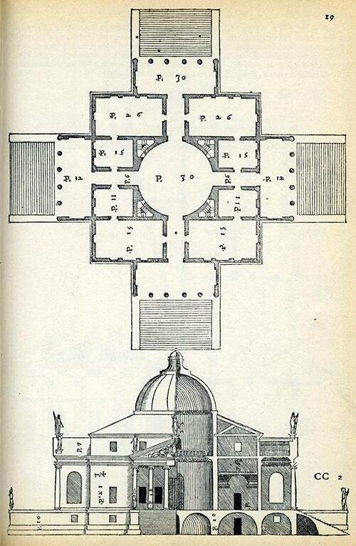

La rappresentazione come verifica esplorativa
All’inizio del progetto, ogni forma è un’ipotesi. Schizzi, diagrammi e modelli operano come strumenti di esplorazione: non mostrano una forma finita, ma costruiscono uno spazio mentale in cui testare tensioni, errori, relazioni. La rappresentazione non è un’esposizione, ma un luogo critico in cui l’idea prende corpo, si chiarisce, si trasforma.

Schizzi, varianti e sezioni come strumenti di verifica della forma
Nella progettazione della Biblioteca Laurenziana, Michelangelo utilizza il disegno non come strumento illustrativo, ma come vero laboratorio di verifica della forma. Gli schizzi conservati agli Uffizi (qui riprodotti parzialmente) sono ricchi di ripensamenti, giunzioni corrette, curvature provate e scartate; essi mostrano come il vestibolo e la celebre scala non siano nati da un’intuizione unica, ma da una sequenza di prove che mettono sotto tensione la struttura spaziale. La rappresentazione diventa così il luogo in cui il progetto si costruisce.
Michelangelo esplora il vestibolo attraverso numerose sezioni verticali, veri test della relazione tra corpo, parete e luce: il muro non è sfondo ma massa attiva che spinge e contrae lo spazio. Le continue variazioni nelle proporzioni delle paraste, negli aggetti, negli incassi dei peducci mostrano un processo in cui ogni elemento è corretto in funzione del comportamento complessivo dello spazio. Anche la scala — che nelle versioni preliminari assume forme diverse, più o meno ripide, più o meno articolate — è il risultato di una serie di verifiche grafico-spaziali che cercano un equilibrio tra forza plastica e necessità distributiva. Ciò che emerge, attraverso questi disegni, è un metodo: la forma viene trovata nel disegno, non prima del disegno. Gli schizzi funzionano come “prove di stress” della struttura: Michelangelo controlla il rapporto tra masse e vuoti, la coerenza delle curvature, la continuità delle spinte e la qualità della luce. La rappresentazione non serve dunque a mostrare la soluzione finale, ma a scoprire se la soluzione regge, se è coerente, se è necessaria.
La Laurenziana diventa così un caso esemplare della logica della Lezione 5: il progetto non è un insieme di idee, ma una serie di verifiche disciplinate, condotte attraverso piante, sezioni e schizzi che costringono la forma a misurarsi con il proprio campo strutturale

Nel lavoro di Louis Sullivan, e in particolare nel progetto dell’Auditorium Building, Chicago (1887–1889), la rappresentazione non ha una funzione decorativa né illustrativa, ma diventa un vero e proprio strumento critico: un luogo in cui la forma viene messa sotto pressione, verificata, adattata e ricorretta alla luce dei problemi strutturali, distributivi e tecnici che emergono durante il processo.
Gli schizzi e i diagrammi prodotti nello studio Adler & Sullivan mostrano una condizione tipica della cultura progettuale americana di fine Ottocento: la necessità di far convivere massa muraria, struttura metallica e un programma funzionale estremamente complesso (hotel, uffici, teatro, sale di prova). Ciò significa che la forma non può essere semplicemente disegnata: deve essere testata, spesso ripetutamente, per verificare se sia in grado di sostenere le esigenze strutturali e funzionali dell’edificio.
In questo senso gli schizzi strutturali dell’Auditorium Building sono esemplari, perché mostrano come:
- la rappresentazione non serva a fissare un’immagine, ma a far emergere la logica interna del progetto;
- la forma non preceda la struttura, ma ne risulti continuamente negoziata, ridefinita nel rapporto tra sala teatrale, trave reticolare, involucri e spazi serventi;
- il disegno non sia l’esito, ma il luogo in cui la decisione architettonica avviene.

Il Centraal Beheer (Apeldoorn, 1972) rappresenta uno dei casi più chiari in cui la forma architettonica nasce non da un gesto compositivo, ma da una lunga sequenza di verifiche progettuali, condotte attraverso piante modulari, modelli tridimensionali e studi di aggregazione. Il progetto non mira a definire un volume unitario, bensì a costruire un campo strutturale estensibile, capace di generare ordine attraverso l’interazione tra parti ripetute e differenziate.
Alla base dell’edificio vi è un modulo spaziale di 9×9 metri, sviluppato, testato e modificato dallo studio attraverso una serie di modelli di studio: non un’unità astratta, ma un elemento empirico, verificato nella sua capacità di accogliere funzioni, percorsi, relazioni visive e variazioni d’uso. La rappresentazione svolge qui un ruolo centrale: ogni disegno o modello serve a interrogare il modulo, a misurare come esso si comporta aggregandosi, deformandosi, accogliendo ponti, vuoti, passerelle e spazi informali.
Il progetto mostra così che la forma non è un risultato imposto dall’alto, ma l’esito di una pressione interna del sistema modulare, continuamente controllata attraverso la rappresentazione. Le “strade interne”, i vuoti verticali e i punti di incontro non sono aggiunte successive, ma emergono dal modo in cui i moduli reagiscono quando vengono aggregati: la pianta e il modello rivelano quali variazioni producano relazioni sociali più ricche o maggiore permeabilità spaziale.
Questa dinamica rende il Centraal Beheer un esempio ideale per la la nostra lezione: la rappresentazione non serve a mostrare un edificio, ma a capire se il sistema funziona. Il risultato è un’architettura che non è definita da una forma finita, ma dalla sua capacità di reggere il cambiamento.
Hertzberger dimostra così che progettare non significa definire un’immagine, ma costruire un campo relazionale in cui forma, uso e comportamento degli utenti possano interagire. Il modulo non è un fine, ma uno strumento critico: la sua ripetizione controllata permette di verificare la struttura dell’intero edificio, la sua adattabilità futura e la qualità degli spazi di vita quotidiana.
Il Centraal Beheer mostra in modo esemplare che l’architettura nasce nel disegno che interroga, non nel disegno che rappresenta. È nella verifica continua del modulo e nella sua aggregazione che prende forma un organismo capace di trasformarsi senza perdere identità.
La pianta come primo banco di prova
La pianta è il primo dispositivo critico della composizione. Non registra una disposizione, ma verifica relazioni: proporzioni, simmetrie, gerarchie, vuoti dominanti. Funziona come strumento logico e spaziale insieme: se la pianta regge, il progetto può cominciare a esistere come sistema.

Nella Villa Rotonda la pianta non descrive l’edificio, ma ne costruisce l’identità: quadrato, cerchio, assi e proporzioni definiscono un campo di equilibrio in cui ogni parte pesa sulle altre. La forma nasce dalla verifica grafica dei rapporti, non da un’immagine ideale.
La Villa Rotonda è uno dei casi più esemplari, nella storia dell’architettura occidentale, di come la pianta sia il luogo in cui l’edificio prende forma in senso critico, prima ancora che volumetrico o figurativo. Palladio non usa la pianta come semplice rappresentazione dell’oggetto, ma come strumento matematico, come campo in cui verificare rapporti, simmetrie, pesi e proporzioni che devono garantire la stabilità concettuale dell’opera.
La pianta della Villa Rotonda nasce dall’intersezione tra due sistemi:
- un ordine geometrico basato su quadrato, cerchio e assi ortogonali che definiscono la logica del centro;
- una distribuzione gerarchica delle parti, misurata in termini di equilibrio, distanza e proporzione tra i volumi serviti e quelli serventi.
Per questo la pianta della Rotonda è didatticamente preziosa: mostra come la forma non possa essere immaginata senza essere prima verificata. Il prestigio volumetrico dell’edificio — i quattro portici, la cupola, la perfetta centralità — è in realtà l’esito di un lavoro invisibile, fatto di prove proporzionali, pesi, moduli e allineamenti che emergono solo nella pianta.
Palladio ci mostra che la coerenza architettonica è un fatto di rapporti, non di immagine: la pianta non “illustra” la Rotonda, la costruisce.

Nella Villa Stein la pianta verifica la coerenza del campo: proporzioni, spessori, assi e percorsi sono calibrati per tenere insieme un organismo estremamente allungato. La modernità nasce qui come equilibrio misurato, non come libertà formale.
Nella Villa Stein la pianta diventa il vero luogo di costruzione dell’architettura: non uno schema distributivo, ma un dispositivo critico che permette di verificare l’equilibrio di un organismo estremamente allungato. Le Corbusier utilizza la pianta per misurare rapporti, pesi, proporzioni e allineamenti, assicurandosi che il campo moderno — apparentemente libero — mantenga una coerenza interna rigorosa.
La pianta rivela un sistema proporzionale preciso, basato su rapporti numerici e geometrici che anticipano il Modulor: sequenze, allineamenti, variazioni calibrate di profondità. La struttura non è un dato tecnico aggiunto, ma un elemento che la pianta deve continuamente testare: i setti portanti, le fasce strutturali e i pieni laterali bilanciano il corpo edilizio per evitare che la lunghezza lo renda instabile sul piano spaziale.
Allo stesso tempo, la pianta organizza il percorso come parte integrante della logica del campo: la rampa centrale, le soglie e le aperture non sono elementi funzionali, ma fattori di equilibrio che distribuiscono pesi e gerarchie. È nella pianta che si vede come il movimento concorra alla tenuta dell’intero sistema.
Villa Stein mostra in modo esemplare che la modernità non nasce da una libertà formale, ma dalla verifica dei rapporti interni: proporzioni, spessori, assi e movimenti devono reggere insieme, altrimenti la forma non funziona. La pianta, qui, non rappresenta l’edificio: lo mette alla prova.

Nella Cappella della Resurrezione la pianta non è uno schema distributivo, ma un dispositivo di verifica attraverso cui Lewerentz costruisce l’equilibrio interno dell’architettura. Sebbene il corpus grafico conservato mostri soprattutto studi di dettagli, la pianta unica è già sufficiente per capire come l’autore misuri con precisione pesi, rapporti e proporzioni che definiscono il carattere dell’edificio.
Lewerentz non cerca simmetrie apparenti né composizioni scenografiche: ciò che interessa è la tensione controllata tra navata, percorsi, cappelle laterali e abside. Ogni spessore murario, ogni scarto di allineamento, ogni variazione nella profondità degli ingressi partecipa alla costruzione di un campo spaziale intensamente calibrato. La pianta diventa così il luogo in cui l’architetto verifica che l’architettura regga non per effetto formale, ma per equilibrio interno.
Questo lavoro di misura si ritrova anche negli altri disegni — sezioni, prospetti, dettagli — dove il silenzio materico della cappella è messo alla prova attraverso micro‐aggiustamenti, variazioni della luce, definizione delle soglie. Lewerentz progetta come se ogni relazione dovesse essere verificata una per una: non un linguaggio, ma un edificio che “trova” la sua forma attraverso la precisione del disegno.
Per questo la Cappella della Resurrezione è esemplare nella Lezione 5: mostra che l’architettura non nasce da un’immagine complessiva, ma da una pianta che mette alla prova l’idea, pesandone le proporzioni e individuando la distanza esatta tra le parti. La pianta di Lewerentz non rappresenta l’edificio: lo rende possibile.
La sezione come prova della profondità
La sezione svela la struttura verticale dello spazio. Verifica altezze, direzioni della luce, rapporti con il suolo, ritmo delle soglie. Più che disegnare, la sezione interroga: chiede alla forma se può farsi volume, attraversamento, profondità percepita. Rende visibile ciò che nella pianta è ancora implicito.

La Chiesa dell’Autostrada del Sole è uno dei casi più chiari in cui la sezione diventa il luogo in cui il progetto rivela la propria logica interna. Mentre la pianta registra la disposizione dei volumi, è la sezione che mostra il comportamento dello spazio: la dinamica delle coperture, la modulazione della luce, la variazione delle altezze e delle tensioni strutturali.
Nella grande sezione longitudinale, il tetto a falde spezzate emerge come una struttura viva, irregolare, quasi tesa, che guida la luce naturale e definisce un percorso percettivo più che geometrico. Le curvature, gli innalzamenti improvvisi e le compressioni creano un ritmo spaziale che non è decorativo, ma risponde a un’esigenza liturgica e comunitaria: costruire un luogo di raccoglimento in movimento.
La sezione mette inoltre in evidenza la relazione tra murature portanti e copertura sospesa, rivelando l’equilibrio instabile e intenzionale tra masse e vuoti. È in questa “messa a nudo” che la forma dimostra la sua coerenza: la luce entra come taglio verticale, come fenditura laterale, come riflesso sulle superfici inclinate, verificando di volta in volta la qualità atmosferica dell’edificio.
Per Michelucci, la sezione non è un disegno tecnico ma una prova critica: è lo spazio nella sua profondità, nella sua luminosità e nella sua tensione strutturale. La Chiesa dell’Autostrada insegna così che progettare significa vedere lo spazio di lato, comprenderne il peso, la luce, la gravità, e lasciar emergere da questa verifica il senso dell’architettura.

La Bagsværd Church rappresenta uno dei casi più esemplari in cui la sezione diventa il vero luogo di progetto. Utzon non costruisce la chiesa a partire dalla pianta o da una forma esterna riconoscibile, ma dalla curva della volta interna: una superficie morbida, simile a una nuvola, che nasce dall’osservazione di un cielo tropicale durante un viaggio in Asia. È questa curva — non l’involucro, né la composizione dei volumi — che definisce l’identità dell’edificio.
Nella sezione si vede con evidenza ciò che nella pianta rimane implicito: lo spazio liturgico è un ambiente atmosferico regolato da luce e gravità. Le superfici concave della volta convogliano la luce zenitale lungo traiettorie morbide, generando gradienti luminosi che sostituiscono qualsiasi apparato iconografico. La sezione rivela come la luce modelli lo spazio, costruendo profondità, ordine e orientamento senza imporre assi o simmetrie.
La “nuvola” non è un gesto poetico astratto, ma il risultato di una verifica rigorosa: la curvatura è studiata per sostenersi con un sottile guscio in calcestruzzo, per distribuire il carico e per amplificare l’acustica in modo controllato. La sezione mostra così l’inseparabilità tra fenomeno e struttura, tra geometria e comportamento: la forma delle superfici determina lo spazio molto più di quanto facciano le pareti perimetrali, che restano quasi mute.
Per questo la Bagsværd Church è centrale nella logica della Lezione 5: la forma emerge dalla sezione perché è lì che la luce e la materia si incontrano, e che lo spazio rivela le sue ragioni profonde. Utzon dimostra che la sezione non è un disegno tecnico, ma uno strumento critico che permette al progetto di trovare il proprio carattere, il proprio ritmo e la propria atmosfera.

Nel progetto per il Hedmark Museum, la sezione non serve a descrivere la forma, ma a definire la postura dell’architettura nei confronti della storia. Il ponte interno — vero dispositivo concettuale dell’intero intervento — è comprensibile solo in sezione, perché è lì che si misura lo scarto fra la leggerezza della nuova struttura e la gravità delle rovine medievali che essa attraversa senza mai toccarle.
Fehn costruisce la sezione come un luogo di negoziazione: da un lato il peso del passato, la muratura irregolare, la materia stratificata dell’archeologia; dall’altro la linea tesa del ponte, una trave sottile che si distacca millimetricamente dalle superfici antiche. La sezione rende visibile questa distanza — fisica e mentale — e dimostra che il progetto non è un ampliamento, ma un modo di guardare. L’architettura diventa un dispositivo percettivo che organizza il rapporto tra corpo e rovina, tra movimento e memoria.
Il ponte non connette solo due punti nello spazio: connette due epoche, due modi di costruire, due logiche strutturali. In sezione emergono la discontinuità, la sospensione, la scelta precisa di non appoggiarsi alla storia ma di attraversarla con rispetto. Non c’è fusione, non c’è mimetismo: c’è un dialogo fondato sulla distanza, che è il vero atto critico di Fehn.
Per questo il Hedmark Museum è esemplare nella lettura didattica della sezione: qui la sezione è il luogo dove si chiarisce il comportamento dello spazio, dove la luce rivela il vuoto tra le parti, dove il progetto dimostra la propria etica prima ancora che la propria forma. Non è un disegno che rappresenta l’edificio: è il disegno che ne fonda il senso.
L’assonometria come simulazione spaziale
L’assonometria raccoglie in un unico campo ciò che la pianta e la sezione separano. Serve a simulare un sistema spaziale coerente, ancora aperto alla trasformazione. Costruisce un’immagine che non chiude, ma prefigura: restituisce la forma come comportamento, non come oggetto.

Le strutture a elementi continui di Angelo Mangiarotti rappresentano uno dei momenti più radicali della ricerca italiana sul rapporto tra forma e costruzione. In questo sistema — basato su elementi prefabbricati che si sorreggono per pura azione gravitazionale — la forma non nasce da un’intenzione compositiva, ma da un principio strutturale: gli elementi funzionano solo se la loro geometria è esatta, se il peso si distribuisce correttamente, se le connessioni si verificano nello spazio.
Per questo l’assonometria è lo strumento decisivo. Non un modo per illustrare la struttura, ma il luogo in cui il sistema viene messo alla prova: la continuità del campo, la direzionalità dei carichi, la reciprocità degli incastri devono apparire evidenti, comprensibili, verificabili. L’assonometria mostra ciò che la pianta o la sezione non rivelano: la logica tridimensionale del sistema, la sua capacità di estendersi indefinitamente senza perdere coerenza, la natura “senza gerarchie” della griglia che nasce dalla sola relazionalità tra elementi.
La forza del lavoro di Mangiarotti sta proprio in questa coincidenza totale tra rappresentazione e invenzione: il disegno è già costruzione, perché permette di capire se l’idea regge. La struttura esiste solo nella misura in cui l’assonometria dimostra la fattibilità geometrica del sistema. In questo senso Mangiarotti anticipa una visione dell’architettura come campo strutturale più che come forma compositiva — un sistema in cui l’ordine emerge dalla verifica, non dalla decisione autoriale.

Nel progetto per la Bell-Lloc Winery, RCR Arquitectes definisce l’architettura non come oggetto, ma come sistema di relazioni primarie tra suolo, struttura e luce. L’assonometria diventa il dispositivo ideale per verificare questo sistema: non rappresenta semplicemente le “forme”, ma permette di osservare come le lame di acciaio corten si comportino come un campo strutturale che attraversa il terreno, lo incide e lo sostiene.
La cantina è concepita come una fenditura nel paesaggio: una sequenza di setti paralleli, regolari nella distanza ma irregolari nella loro deformazione, che produce un ambiente in cui la luce filtra da tagli calibrati e il percorso si inscrive come movimento compresso e liberato. L’assonometria rivela precisamente questo comportamento: come le travi si pieghino, si infittiscano o si diradino in risposta alla topografia, e come lo spazio emerga dalla relazione dinamica tra struttura e suolo.
In questo senso Bell-Lloc è un caso esemplare: dimostra che la verifica assonometrica non serve a “mostrare” l’edificio, ma a rendere leggibile la logica che lo genera. La forma non è un volume chiuso, ma un campo di forze che prende coerenza solo quando viene osservato nella sua continuità tridimensionale. L’assonometria permette di cogliere questa continuità, mostrando come la cantina sia al tempo stesso architettura, infrastruttura e paesaggio.

Nella House in White, Kazuo Shinohara afferma con radicalità la propria idea che “la casa è un’opera d’arte” e lo fa attraverso un dispositivo di estrema precisione: l’assonometria strutturale.
Qui l’assonometria non è un semplice modo per rappresentare la casa, ma un mezzo critico per verificare il carattere assoluto del sistema spaziale. La struttura diventa la matrice della forma: un telaio rigoroso e calibrato in cui ogni elemento è indispensabile e nulla è decorativo.
Il disegno assonometrico mostra come la casa sia concepita come un organismo autonomo, quasi matematico: un volume puro, controllato nelle proporzioni, in cui il sistema delle travi e dei pilastri stabilisce una tensione continua tra astrazione e domesticità. È un “campo strutturale” nel senso più radicale: un insieme coerente che non si compone per aggiunta, ma emerge dalla logica interna della costruzione.
L’assonometria permette di vedere ciò che la percezione spaziale rischia di nascondere:
- la regola che governa il vuoto;
- il sistema di forze che struttura la casa;
- l’identità dell’edificio come organismo indivisibile.
Il modello come primo contatto con la materia
Il modello non è una miniatura illustrativa, ma in questa fase è un test percettivo. Misura la luce, la densità, la soglia, la presenza fisica della forma. È il primo confronto tra astrazione e materia: l’idea comincia a pesare, ad avere spessore, a occupare lo spazio. Il progetto diventa reale, anche se ancora in forma provvisoria.

Nel Teatro del Mondo, il modello assume un ruolo decisivo: non è un’anticipazione dell’oggetto finale, ma il luogo in cui l’idea architettonica viene messa alla prova nella sua essenza più profonda. Rossi concepisce il teatro come una figura primaria — una torre lignea sospesa sull’acqua — ma questa purezza tipologica non è un punto di partenza stabile: è il risultato di un processo continuo di verifica, e il modello è lo strumento attraverso cui la forma acquista precisione, necessità e coerenza.
Il modello consente innanzitutto di verificare la logica strutturale: un edificio galleggiante non può essere rappresentato solo graficamente, deve essere testato nella sua stabilità, nelle proporzioni del basamento, nel rapporto fra pieno e vuoto. Nel laboratorio critico del modello, la torre e la piattaforma trovano il loro equilibrio fisico prima ancora che formale.
Ma soprattutto, il modello permette a Rossi di esplorare la natura quasi metafisica dell’opera: un corpo architettonico essenziale che si staglia sul paesaggio veneziano come un’icona senza tempo. La riduzione materica del modello — legno, superfici neutre, volumi puri — amplifica la dimensione archetipica dell’edificio e lo restituisce come una presenza assoluta, sospesa fra città, acqua e cielo.
In questo senso il modello non “rappresenta” il Teatro del Mondo: lo costruisce criticamente. Ne mette alla prova la tipologia, ne affina le proporzioni, ne verifica la capacità di diventare luogo attraverso la forma. Il teatro che emerge non è la miniatura di un’architettura, ma l’architettura stessa nella sua forma più concentrata.
Il Teatro del Mondo mostra così, in modo esemplare, che il modello è un dispositivo conoscitivo: un campo in cui la forma si misura con la realtà fisica e simbolica fino a trovare la propria inevitabilità.

Il modello come test di materia, luce e comportamento
Nel progetto per il Ricola Storage Building, Herzog & de Meuron trasformano il modello in un vero dispositivo critico, non come miniatura rappresentativa, ma come strumento per verificare l’identità materiale dell’edificio. La ricerca si concentra sulla pelle architettonica: una superficie composta da listelli sovrapposti, derivata dall’iconografia del legno accatastato, che deve funzionare contemporaneamente come muro, filtro luminoso, immagine e struttura. È nel modello che questa pelle viene messa alla prova: non per illustrarla, ma per testarne densità, trasparenza, spessore, ritmo, variazioni d’ombra durante il giorno.
Herzog & de Meuron lavorano sulla superficie come campo sensibile: ciò che conta non è la forma volumetrica, ma il comportamento materico. Il modello permette di verificare come la sovrapposizione dei listelli generi profondità ottiche, come la luce si infiltri tra le lamelle, come il volume perda compattezza assumendo caratteristiche quasi atmosferiche. La costruzione diventa dunque un laboratorio in cui si misura la soglia tra opacità e trasparenza, tra massa e pelle, tra immagine e corpo architettonico.
La forza critica dell’opera — e del modello — risiede in questa ambiguità produttiva: un edificio industriale che funziona come un organismo poroso, capace di variare continuamente a seconda della luce. Il modello rivela ciò che il disegno non può mostrare: come la materia si comporta nello spazio e come questo comportamento diventi architettura. In questo senso, il Ricola di Herzog & de Meuron esprime perfettamente la logica della presente scheda: il modello non riproduce l’edificio, ma lo fa emergere.

Il Padiglione per Mont-de-Marsan rappresenta un momento esemplare della ricerca di Toyo Ito sulla dissoluzione dell’oggetto architettonico in una membrana fluida, capace di comportarsi come un organismo leggero e permeabile. Nel progetto, la forma non nasce da un gesto formale o da una composizione volumetrica, ma da una sperimentazione materiale condotta attraverso il modello. È il modello, infatti, a permettere a Ito di verificare come una superficie traforata possa diventare struttura, luce e spazio allo stesso tempo.
Il padiglione è concepito come un guscio curvilineo di elementi sottili, traforati secondo una logica quasi digitale ante litteram. Il modello serve a testare densità, aperture, torsioni e la continuità tra le parti: un laboratorio in cui la pelle architettonica rivela il proprio comportamento prima ancora che il sistema costruttivo venga definito. Le perforazioni, studiate nel modello con variazioni minime, determinano non soltanto la vibrazione luminosa interna, ma anche la rigidità e la stabilità dell'involucro. La forma, dunque, non è imposta: emerge come esito di una serie di verifiche sul rapporto tra superficie e struttura.
In questo senso, il padiglione di Ito incarna perfettamente il tema della scheda 5.5: il modello non è una miniatura dell’edificio, ma il luogo in cui il progetto prende davvero forma. È nel modello che la membrana si piega, si irrobustisce o si alleggerisce; è nel modello che si misura la coerenza di un’idea che aspira a diventare spazio costruito. L’architettura, qui, non è un oggetto da rappresentare, ma un comportamento da verificare.